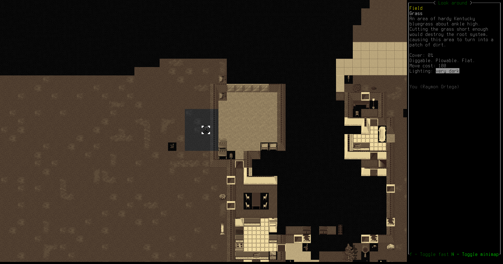
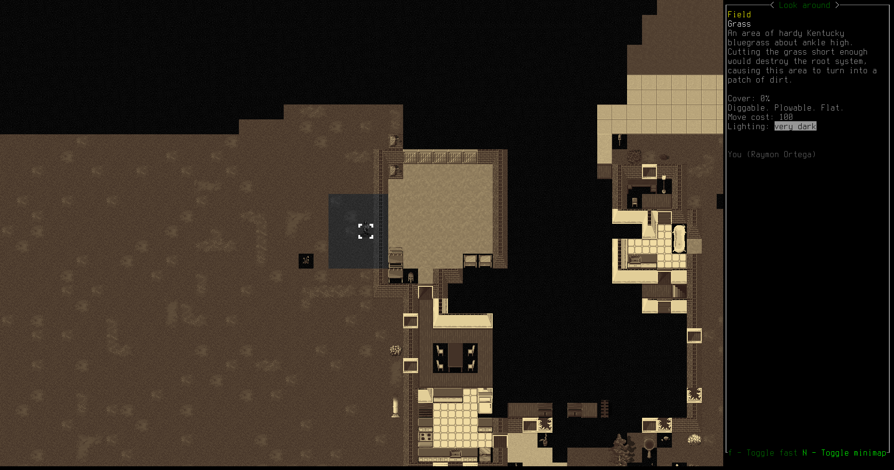

He replaces his flashlight with a headlamp he finds in one of the dressers. Every bit of space saved in his sling is space for more loot. The headlamp comes with a high-capacity rechargable battery, but he doesn't have a way to charge batteries yet.
He replaces his flashlight with a headlamp he finds in one of the dressers. Every bit of space saved in his sling is space for more loot. The headlamp comes with a high-capacity rechargable battery, but he doesn't have a way to charge batteries yet.
Raymon needs more supplies. He'd like a map of the area; extra food is good; tools would be useful. It's almost nightfall; he's spent the whole day traveling toward the refugee center, but now he's stuck just outside a city of unknown dimensions. The zombies can't see very far at night, so Raymon plans to raid some of the houses for supplies as soon as nightfall comes. It's time to set up camp.


His camp is barebones, just a tent and a car, but it's better than nothing. The tent ensures no zombies (or aliens, for that matter) can see him.

Raymon learns a new spell, Magical Light. It's not very bright—even reading by it is slower—but there's no downside to learning it and it might come in handy later.

He makes some black coffee with boiled puddle water and his atomic coffee maker.
Then Raymon spends the rest of the day reading, improving his mechanics and tailoring knowledge. Now that he has an SUV, he needs to know how to repair it. Making his own gear will be very handy too. He wants a strap to carry his spear, but he doesn't quite understand how to sew one together, nor does he have the tools. He reads until nightfall. When there's nothing else to do, reading is always a good way to spend time: knowledge is power.
Finally, night falls. Raymon creeps up toward the houses. He can barely see in the dark, but that means that the zombies can't either.
A feral human breaks wielding a pipe breaks out of the house, mumbling something about intruders. Raymon avoids that house.
While sneaking into a garage in another house, something trips the alarm system. A beeping noise pierces the night from somewhere, and Raymon knows that zombies will be stumbling toward his location even now.
Sure enough, here they are. Raymon leaves by the window, letting the zombies break into an empty house.
A zombie like any other, except that its facial features and skull have been devastated. It's unclear what caused the damage, but between the scraps of flesh you can see that its face and brain are gone, though its ears remain intact.
In another house, Raymon spots a brainless zombie with no eyes. It can't see him, but it seems to react to sound, so he stays quiet. He sneaks through the house, looting useful items.
One of the most useful items he finds is an ice axe. This tool is a decent weapon, in case he drops his spear, and it can be used to pry open doors, windows, and act as a hammer too. It will be handy for the rest of his adventures. He clips it onto his belt for easy access.
Down in the basement of the house he hits another jackpot. Whoever lived here was a tailor, or a dressmaker, and they had all kinds of fabric and threads and tailor's kits and buttons and fasteners. There's enough material here to last him for a long time in his own makeshift tailoring. He loots as much as he can carry.
He replaces his flashlight with a headlamp he finds in one of the dressers. Every bit of space saved in his sling is space for more loot. The headlamp comes with a high-capacity rechargable battery, but he doesn't have a way to charge batteries yet.
 This was the video that Raymon remembered. That was the moment that he knew the end of the world was here, now. That was when he knew that everyone was going to die. And now he was killing them again.
This was the video that Raymon remembered. That was the moment that he knew the end of the world was here, now. That was when he knew that everyone was going to die. And now he was killing them again.

As Raymon leaves the houses, he's jumped by a huge musclar zombie that comes sprinting out of the gloom. Raymon swings his ice axe, chops into the festering bulk, but the zombie lands a few powerful hits on Raymon's body. He is bleeding and bruised by the time he finally chops through the zombie's head, and his rain coat is torn up.


Making his way painfully back to camp, Raymon patches himself up with bandages and antiseptic from the first aid kit. He needs to get more bandages, he's nearly out from that fight.

But for now, to ignore the pain, Raymon reads more about tailoring and starts to form a plan for making a spear strap. He doesn't want to be caught out in the open without a spear again, but he also doesn't want to have to carry a spear in his hand all the time.
After a couple hours of study and sewing, Raymon comes up with something good. He ties it onto his back and straps his battered spear in. This will serve.

He falls asleep, and there is morning, the second day.
Raymon feels much better after that sleep. He still needs supplies, especially a map, so he decides to hang around this camp a little longer. The first order of business is to craft a new fire-hardened spear to replace his current battered weapon. He shouldn't have tried prying apart a fridge with it. He also needs a better backpack. More bandages would be good too.
An hour and half of work and Raymon sharpens and hardens himself a new spear. It goes straight into his spear strap; it feels solid against his back.

After reading a bit about mechanics, Raymon jury rigs a household battery charger into his SUV's electrical system. It's not very fast, certainly not as efficient as the recharging station he has in the trunk, but it's a lot easier to set up and can keep his headlamp juiced up.

To spend the rest of the day, Raymon decides to learn some more magic. The next spell he learns is Phase Door, which teleports him a short distance. This could be very useful as an escape, or even to break in to places.
Raymon starts inside the tent. The world seems to waver around him, and suddenly...

...He's outside the tent! This will take a little time for him to get used to it, but there's no doubt that it will save his life at some point.

The final spell is Sound Bomb, which creates a loud noise at a location of his choosing. He can't choose a location very far, for now, but later, after much practice, when he can make a noise several dozen meters away, it will become a very useful distraction.


 
